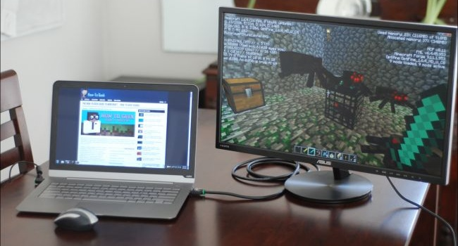
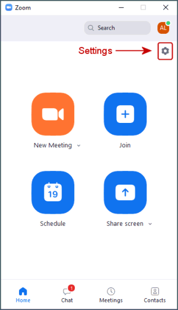
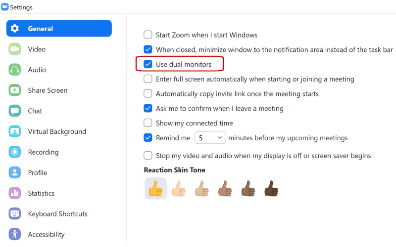
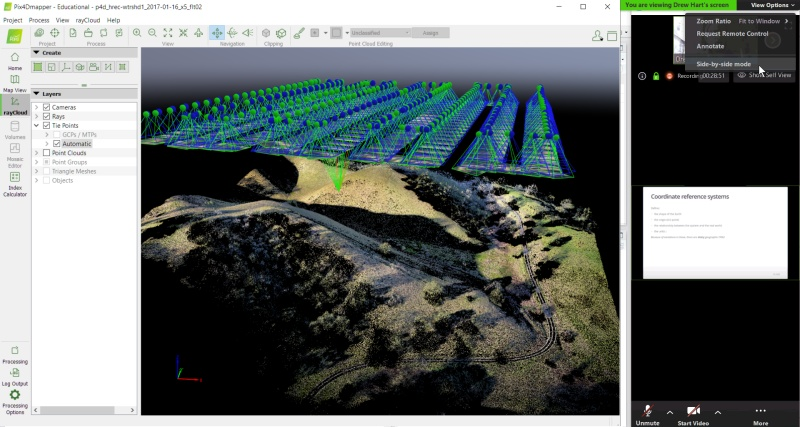
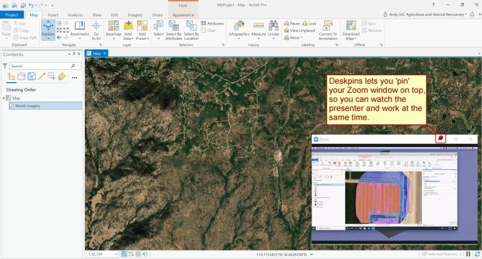

Zoom Tips
Setting Up Your Workspace
Try to find a spot which is comfortable and relatively free from distractions and background noise. Some people find a pair of headphones helps minimize distractions.
Ergonomics are important also! If you’ve ever tried to work on a laptop while sitting on a couch for 4 hours, it isn’t ideal. If you plan on multitasking, considering joining the audio via phone and headset so you have the option to move around.
Use the Zoom Client
Although you can join Zoom meetings through a browser, we recommend installing the Zoom Client for Meetings. You may already have it if you’ve used Zoom before, and you see it in the Start Menu (Windows) or Finder (Mac). Please make sure you have the latest version, as some of the buttons and features have changed.
Note: As of May 30 2020, Zoom will only allow you to connect to meetings with version 5.0 or higher of the Zoom client.
A Zoom account is not required. A webcam is not required.
Managing Zoom Audio
If you find your Zoom audio is garbled, perhaps due to poor bandwidth, you can dial-in with a phone. Click the microphone button on Zoom for details. In that case, you should disconnect from the the audio on your laptop or tablet (to prevent echo).
Muting and unmuting yourself are essential skills for Zoom. It’s generally good practice to stay muted until you have something to say. If you’re using the Zoom app on Windows, click the microphone button. If you’re using the Zoom app for phones and tablets, tap the middle of the screen to make the controls visible. If you dial-in on a phone, you can use the ‘mute’ button on your phone app, or dial *6 to mute or unmute yourself.
Viewing Zoom and GIS Software Simultaneously
Best Option: Dual Monitors
A second screen is very helpful, especially for hands-on workshops where you’ll be working through a software exercise. With a second screen, you can view the instructor’s slides or demo on one screen, and open your GIS program on the other.
If you have an external monitor for your laptop / computer, you’re all set. (Tip: turn on Zoom’s dual monitors option, see below). Many TVs can be pulled into service as a second monitor depending on the video ports.
If you don’t have a second monitor, a tablet may come in handy. You can only connect to Zoom on one device, but you can view the presentation & exercise instructions on the tablet as you work through the exercise on your laptop. Zoom is available as an app for all major tablets and phones.
Connecting an external monitor to your computer is the best option for doing hands-on software workshops in Zoom
Tips for Using Zoom on a Single Screen
Tip 1. Print out the Exercise Guide
Many of the software workshops have some kind of exercise guide, shared as a PDF or a website, that the instructor will work through as you follow along. Printing the exercise guide might seem old-fashioned, but it will be one less window you have to manage during the workshop. Printing in black and white and on scrap paper will save ink and resources.
Tip 2. Turn on ‘Dual Monitors’
The Zoom client for Windows has a ‘Dual Monitors’ option that will open up screen shares in a separate window. You don’t actually need two monitors. This option is really useful on a single monitor, because you can move and resize the screen share window anywhere you’d like (and even ‘pin’ it to stay on top, see below).
To turn on Dual Monitors, click the gear icon (Settings) in the Zoom client, then check ‘Dual Monitors’.


Tip 3. Place Windows Side-by-Side
You can arrange your windows so that you see both your GIS program and Zoom side-by-side (see below for example). You can devote the entire width of the Zoom window to the screen share by going to ‘View Options’ and making sure side-by-side mode is turned off.
A keyboard shortcut to move windows to the left or right is windows key + left/right arrows. You can then choose which of the remaining windows to put in the other half of the screen. By default, Windows will divide the screen into equal halves, but if you resize the width right after you use the shortcut, it will remember the setting.
Arranging GIS and Zoom side-by-side on a single screen
Tip 4. Use Sticky Notes
If you like to take notes during Zoom meetings, a Sticky Notes utility can help. Almost all sticky notes programs have an option to stay on top, so you don’t have to worry about your notes disappearing. Windows has a built-in ‘Sticky Notes’ app, but an even better one is Stickies from Zhorn Software.
Tip 5. Keep Windows on Top with DeskPins
Surprisingly Zoom does not have an ‘always on top’ mode, but you can keep the Zoom client on top by using a 3rd party utility like DeskPins (Windows).
In conjunction with Zoom’s Dual Monitor options, DeskPins lets you ‘pin’ the screen share window on top, so you can watch the presenter’s demo while also working in your GIS program. Pinned windows can still be resized and moved around so it doesn’t get in the way of what you’re working on.

To ‘pin’ a window, right-click on the DeskPins icon in the system tray, and select ‘Enter Pin Mode’. To ‘unpin’ a window, simply click the little ‘x’ button that appears when you hover over the pushpin icon.